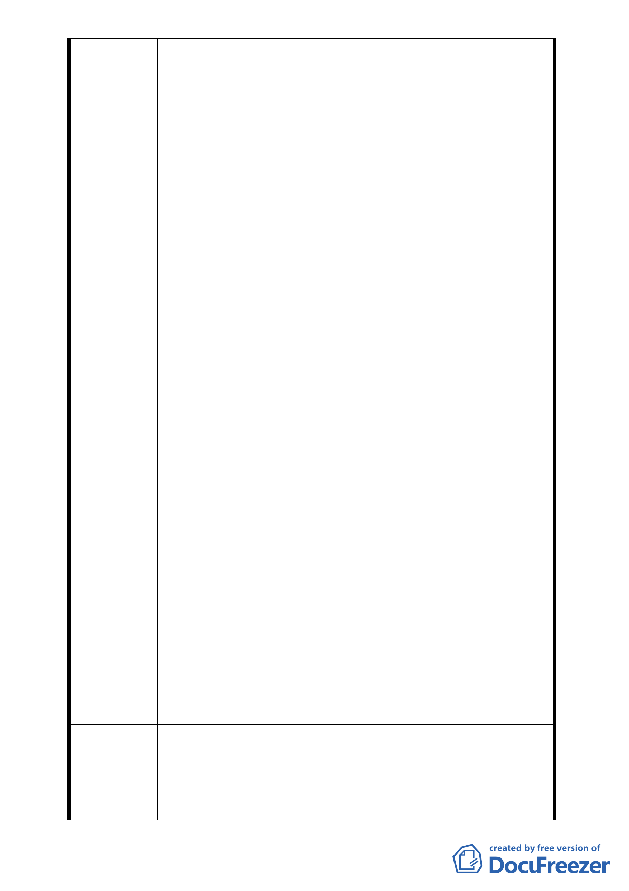

二案僅陳情案件未完成法定程序，認無併入本案討
論該二案之正當性，應不予討論，並瞭解與鄰地協
調仍無共識之事實，故認應就是否同意本公司申請
劃定案予以討論，且認同本案「符合申請規定且具
可執行性」。案經主席依委員建議裁示就「本公司
申請劃定都市更新單元案是否予以通過」予以討
論，並徵詢在場委員意見，經表決無異議後，裁示
本案通過，此過程有當天錄影及錄音為證。
3. 詎料會後本公司請示後續進度時，貴會秘書單位竟
表示本案為報告案，報告案無做成決議之案例，主
席僅裁示本案不併同討論該二陳情案卻未裁示同
意本案通過、都市更新處未建議依本案續行辦理之
方案云云，擬以洽悉本報告案之模糊方式作為本次
會議決議內容，並由都市更新處決定是否再提討論
案重新討論，進而否定本案決議效力。本公司認為
貴會秘書單位此舉剝奪本案申請範圍內相關權利
人之合法權益外，更嚴重影響當天與會委員之公信
力及政府之威信，本公司將全力維護本案申請合法
權益。
4. 另依貴會秘書單位都委會報告案無作決議案例，經
查貴會 96.10.14 都委會第 575 次會議中決議之報告
事項二「臺北市復興段三小段 373-3 地號等 30 筆
土地為更新單元」，該案於貴會報告並決議通過
後，即未再提討論案提會，復由都市更新處於
96.11.23 發布實施。故以報告案之形式其所作之決
議有效實有案例可循。而本案於 595 次會議時，都
市更新處即說明本案已完成該處審議作業，敦請貴
會討論核定。故若貴會秘書單位執意於都市更新處
於本次 601 次委員會中報告 595 次會議決議事項
後，未再提建議依本案申請範圍通過，而忽視當天
委員針對「本案劃定範圍是否同意」之實質討論決
議通過，實有刻意扭曲之嫌，本公司深感不解及遺
憾。
本案申請均依都市更新處相關法規辦理，並已於
建 議 辦 法 貴會第601次委員會議經實質討論後主席裁示通過，請
貴會依當天會議決議內容真實呈現並秉公處理。
1. 本案經98年6月30日本會第595次委員會議決議：
擬建議處
理意見
「一、請更新處函詢國有財產局於98年1月10日後
對本案國有土地之處理意向；另本更新單元南側土
地所有權人陳情納入更新單元，請更新處主動處理
鄰地協調事宜。二、本案公有土地地上物為日式宿
- 23 -